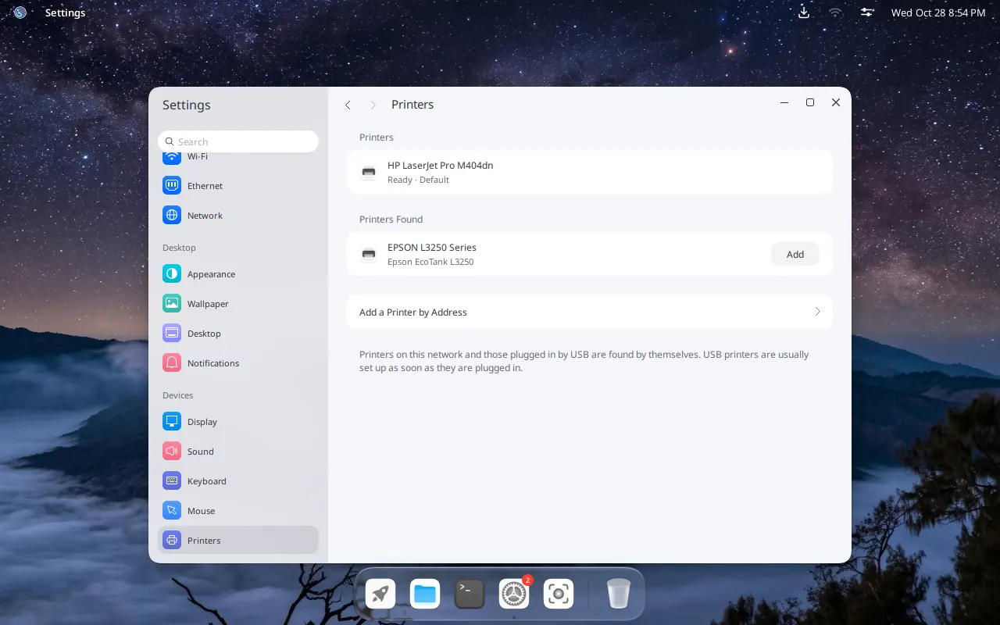

IGN 26 Docs
Hardware
Wi-Fi, printers, scanners, the touchpad and MacBooks: what works and where to change it.
Wi-Fi
Most built-in cards work right away: Intel, Realtek, Qualcomm Atheros, MediaTek and Broadcom, including the Broadcom cards of older MacBooks.
USB Wi-Fi adapters work too. Their driver loads when you plug one in:
- Realtek RTL8811CU and RTL8821CU (the common AC600 adapters), RTL8822CU, RTL8723DU, RTL8812AU, RTL8821AU, RTL8814AU, RTL8852BU and RTL8851BU
- MediaTek MT7921AU, MT7925U and MT7663U
- Ralink RT2500 and RT73, Atheros AR9170 and ath10k on USB
Some adapters first show up as a CD drive with a Windows driver on it. IGN switches them to Wi-Fi by itself.
Printers
Printers on your network are found and set up by themselves, and every app can print to them. A USB printer is set up when you plug it in. Drivers for HP, Gutenprint and Samsung (SpliX) printers are included.


Open Printers in Settings.
At the top are the printers that are set up, with their state and print jobs. Below them, under Printers Found, are printers that were found but are not set up yet. Click Add next to one.
Select a printer and click Print Test Page to check it. Set as Default makes apps choose it first.
If your printer is not listed, click Add a Printer by Address and type its address, for example ipp://192.168.1.20.
Scanners
Scanners and multifunction printers that scan over the network or USB without a driver (AirScan or eSCL) work. Install a scanning app such as Document Scanner from Bayu Store.
Touchpad
Tap to click is on. To right-click, tap with two fingers or press the bottom-right corner of the touchpad.
To change this, open Touchpad in Settings. There you find Tap to click, Tap and drag and Natural scrolling.
MacBooks
- The keyboard and touchpad of MacBook and MacBook Pro models from 2015 to 2017 work, including the 13-inch MacBook Pro of 2017 (A1708).
- The keyboard works at start-up too, so you can type a disk encryption password.
- Sound works on the MacBook Pro of 2016 and 2017.
- The BCM43602 Wi-Fi of these models stays connected.
What is in your computer
Run these in Terminal:
| Command | Shows |
|---|---|
lsusb | USB devices |
lspci | Cards inside the computer: graphics, Wi-Fi, sound |
sudo lshw -short | All hardware in one list |
sensors | Temperatures and fan speeds |
sudo smartctl -a /dev/sda | The health of a disk. For an NVMe disk, use /dev/nvme0n1. |
iw dev | Wi-Fi interfaces |
When you report a hardware problem, include the output of lspci -nn or lsusb.
Next: install apps.